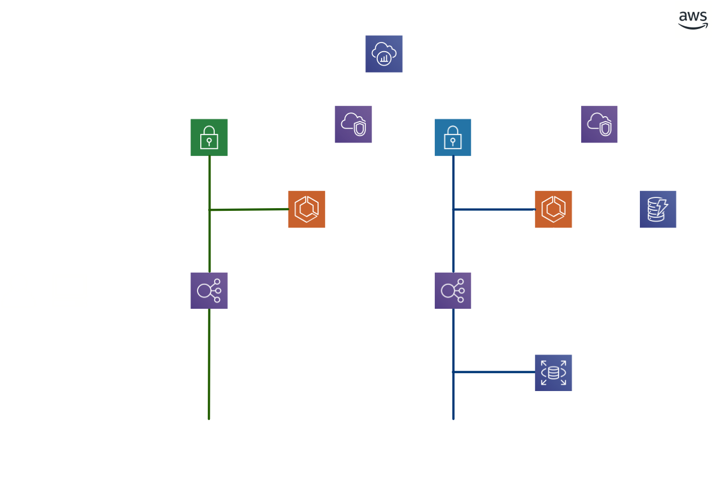

ワークショップ
マイクロサービスとは？
主な仕組みや複雑さとは何か？
自己紹介

- 名前：川畑 光平
- 所属：NTTデータ クラウド技術部
- 現在従事している業務
- クラウド技術R&D
- プロジェクト支援
- 海外グループ連携施策・コミュニティ運営
- AWS社内推進・人材育成
- APN AWS Top Engineers & Ambassadors Since 2019
- 書籍・Web連載記事執筆活動

このスライドの使い方

※当スライドは 「reveal.js」 を使って、GitHub Pages上に作成
ワークショップ アジェンダ
- イントロダクション：グループディスカッション
- マイクロサービス よくあるアーキテクチャ：ハンズオン1
- マイクロサービスの複雑さ 1. 認証・認可：ハンズオン2
- マイクロサービスの複雑さ 2. テレメトリー：ハンズオン3
- グループディスカッション
イントロダクション
どんなときに向いてる？
クラウドネイティブ・マイクロサービス
- 新しいビジネスをWebサービスとして立ち上げ、ユーザのフィードバックを迅速に取り込みながらWebサービスの向上・拡充を図りたい
- 既存のレガシーなアプリケーションをモダンに作り替えて、機能の一部をサードパーティに公開して新たな収益源としたい
- クラウドにデータを収集し、集約や加工・分析を施して、別のWebサービスとAPI連携させて新たな付加価値を産み出したり、ユーザエクスペリエンスを高めたい
クラウドネイティブ・マイクロサービスの利点
- 素早くビジネスを立ち上げるため、Webサービスを実現するアプリケーションをクラウド環境上に構築する
- 新機能の開発やユーザのフィードバックを迅速に取り込み・反映するため、アプリケーションを細分化して疎結合に構築する
- サービスの利用が増えてきた場合に備えて、利用頻度の高いものをスケール可能にしてビジネス機会を逃さないようにする
- 何らかの理由でサービスを中止する場合も、他に影響なく簡単に破棄できる
複雑性とのトレードオフ
| アーキテクチャ課題例 | 詳細 |
|---|---|
| サービス実行フロー制御 | 処理のオーケストレーション／コレオグラフィといったサービス実行フロー制御、エラーハンドリング方式 |
| トランザクション管理 | 複数の更新系Backend Serviceを実行する場合の業務トランザクションのロールバックや補償トランザクション |
| ステートフル共有データストア | アプリケーションにスケーラビリティを持たせることを目的に、ステートフル(状態)データを共有するためのデータストアの利用や、データストア障害に伴うフェイルオーバー発生時のエラーハンドリング |
| サービスディスカバリ方式 | マイクロサービスが動的にスケールアウト／縮退する場合のBackend Service APIのサービスディスカバリ |
| サービス間通信方式 | Backend Service APIを呼び出す場合の同期／非同期の使い分け、リトライ／サーキットブレイカー処理 |
複雑性とのトレードオフ
| アーキテクチャ課題例 | 詳細 |
|---|---|
| サービス認証／認可方式 | OIDC、OAuth2.0に準拠した、JWTを使ったアクセストークンの連携方式 |
| ロギング／モニタリング方式 | アプリケーション／サービスを跨いでトレーサビリティを確保するためのロギング、各サービスごとのモニタリング |
| Backend Serviceステートレス化／冪等性 | スケールアウトを容易にする、Backend Serviceのステートレス化を前提としたREST準拠API規約／ルール(HTTPステータスコードなど)、耐障害性向上のための冪等性をもつ処理実装 |
| クラウドマネージドサービス連携 | 揮発性であるコンテナ／サーバレス環境下で、データ永続化のためのマネージドストレージやキューを利用する場合の方式 |
| マルチクライアントにおけるサービス分割 | Webアプリケーション以外にも、モバイルなどのSPAクライアント、サードパーティサービス連携がある場合のサービス分割／ビジネスロジックの分離方針 |
マイクロサービスの複雑性とは何か？
マイクロサービスの複雑性とは何か？
マイクロサービスの複雑性とは何か？
マイクロサービスの複雑性とは何か？

マイクロサービスの複雑性とは何か？
マイクロサービスの複雑性とは何か？
マイクロサービスの複雑性とは何か？
マイクロサービスの複雑性とは何か？
マイクロサービスの複雑性とは何か？
マイクロサービスの複雑性とは何か？

Ref. Beyond The Twelve-Factor App
グループディスカッション
マイクロサービスアーキテクチャで
あなたがアプリケーションを構築するとしたとき
- 最も重視すべき課題はなんでしょうか？その理由は？
- 課題に対処するために、どのようなやり方が考えられる＆選択すべきだと考えますか？(お客さまにするつもりで)、グループメンバーに説明してください。
- グループメンバーは、お客さまの立場になってその意見に賛成できるかどうか考えてフィードバックしてあげてください。
マイクロサービス
よくあるアーキテクチャ
- これまで説明した課題に対応するために色々考えた結果、こうなることが多いというリファレンス例
- リファレンス例と似た形にとしないといけないわけではありません
- より厳格なセキュリティが求められる場合、最近ではサービスメッシュミドルウェアなどと組み合わされるケースも多くあります。
AWSで構築するマイクロサービスアーキテクチャ

アプリケーション断面でのアーキテクチャ
アーキテクチャと課題との関連とスコープ
ハンズオン
マイクロサービスアーキテクチャの
簡単なアプリケーションを動かしてみよう
- マイクロサービスアプリケーションをクラウド上で実行して、説明の理解を深めましょう。
- 実際の作業を通して、クラウドを利用するメリットや意義を改めて考えてみてください。
- 以下の選択肢から答えを選択ください。
- はい！使用した経験があります！
- 使用した経験はありませんが、内容は承知しています。
- 用語くらいなら聞いたことあります
- いえ、初耳です
- 左のQRコードをスマホなどで読み取ってください
- スライドを開いている方はこちらのリンクから
認証・認可処理の全体像(OIDC/OAuth2)

なぜOAuth2を使用した認可でマイクロサービスを保護するのか？
- サードパーティ含めてクライアントが増えた場合、マイクロサービス側が通常の認証処理だとユーザの管理・確認が煩雑になるので、シンプル化のために サードパーティ側の認証・認可の仕組みに基づいて発行したアクセストークンを使って、マイクロサービスのアクセスを制御する。
- JWT形式によるアクセストークンエンコーディングにより、クライアントが増えた場合のスケーラビリティの確保が容易である
- デファクトスタンダードな認可技術の採用により、様々なプロダクトと連携させたり、セキュリティを担保する品質確保や学習・実装コストの低減を図ることができる。

ハンズオン
Amazon Cognitoを使って
OIDCプロバイダの認証設定をしてみよう
- AWSコンソールからログインして、Cognitoを選択し、OIDCプロバイダを作成してみます。
- 実際の作業を通して、クラウドの認証プロバイダマネージドサービスを利用するメリットや意義を改めて考えてみてください。
(Telemetry：遠隔測定法)


- 以下の選択肢から答えを選択ください。
- もちろん！ヘビーユーザーです！
- 軽く触ったことくらいありますよ。
- 名前くらいなら知ってます。
- 知ってます！骨折した時に病院とかで撮るやつ！
- 左のQRコードをスマホなどで読み取ってください
- スライドを開いている方はこちらのリンクから





ハンズオン
AWS X-Rayを使って
アプリケーションの状態を可視化をしてみよう
- アプリケーションをデプロイして、アプリケーションにアクセスし、オペレーションを実行します
- AWSコンソールからログインして、CloudWatch Service Lensを選択し、アプリケーションの処理状況を確認します。
- 実際の作業を通して、クラウドの監視サービスを利用するメリットや意義を改めて考えてみてください。
ディスカッション
- クラウドネイティブ・マイクロサービスのアプリケーションの基本について学んだ上で、将来どのような技術領域が自分の会社にとって必要になると思うか？私たちはどこを目指す・注力すべきか？
- 経営者の目線に立って、どのようなエンジニアが必要・育てないといけないと思うか？
- 自分自身はどんなエキスパートになるべきか？そのために、会社からどのようなサポートをして欲しいのか？
- ご自身の主張をまとめて、(経営陣に話をするつもりで)、グループメンバーに説明してください。
- グループメンバーは、経営陣の立場になってその意見に賛成できるか どうか考えてフィードバックしてあげてください。
- その上で、経営陣にどうしても伝えたいことを、グループで意見を集約し発表してください。
最後に
- 今回ご縁あって、セミナーの講師の機会をいただきました。私自身も今回の資料準備中に色々考えてしまうことがありました。
- 今回のテーマだけでなく、そもそも変遷が激しい情報技術というもの全般に関して、私自身もたびたび、「何のために多大な時間を費やして、この情報技術分野(今回はクラウド)の発展に努めているのか」分からなくなるときがあります
- 必ずしもこれら全ての技術が人に役に立つものとは限りません。ただ、一方で、数学・物理・化学の基礎研究など、一見、ほとんど人々の生活の豊かさに直接的に寄与するかと言えば無縁のものが、ときに人類や社会の発展に大きな影響を及ぼす何かを生み出すことがあることを知っています(クラウド自体そもそもそうかもですが)
- 少なくとも私は、この分野の技術の実践・研究・発展が、日本の社会や世界全体・私たちの身近な人々の生活や社会システムを、より良くするためのサービスの発展に寄与するものと信じています
- 日本だけなく世界中で問題は山積みです。地球温暖化や紛争等ビッグスケールなものを始め、貧困や資源分配の不均衡、身近なところでは子どもの教育の機会不平等など、見渡せば、私たちが生きる社会の至る所に問題・課題があります
- これらは、到底いち個人レベルで解決できるものではありません、多くの技術者が、社会を便利にしたり、1つでも多くの問題を解決することができる、より高度な技術を身につけ、手分けして・力を合わせて対処していく必要があります。
- 今回紹介させていただいた技術はそうした社会の問題を解決するための何かを、継続的に生み出していくための基礎となるものです。同時に皆さんが、そうした技術をホワイトナイトとして方面にお届けしつつ、より幸せな人生を歩むための道具の一つになることを切に願っております